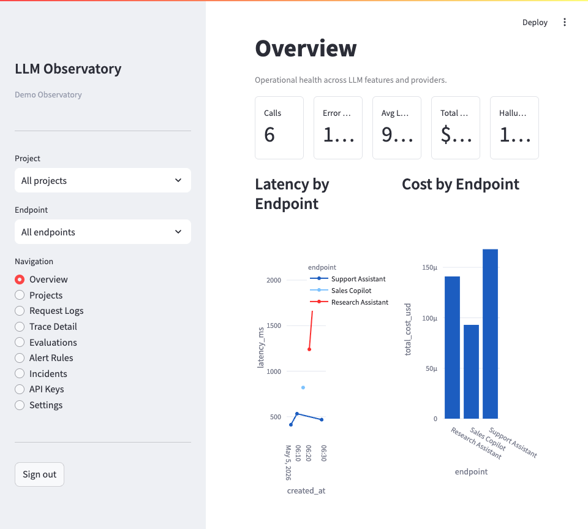

LLM Observatory
LLM features degrade quietly. This is the instrument that notices.
A prompt change or a model update can raise hallucination rates and cost long before any health check reacts. Teams running support, sales, and research endpoints usually can't say which one is expensive, or which one is getting worse.
- Scored per trace. Faithfulness, relevancy, and hallucination, with LLM-as-judge and a deterministic fallback.
- Incidents, not alerts. A threshold breach opens an incident that moves acknowledge to resolve.
- Cost attributed. Tokens and dollars per endpoint, per model, per window.
FastAPI · Prometheus · Application Insights · Azure OpenAI · PostgreSQL
